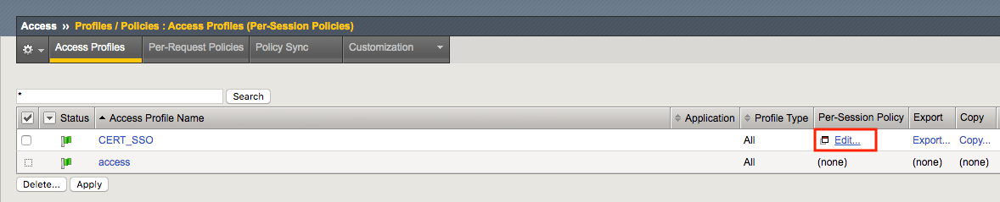
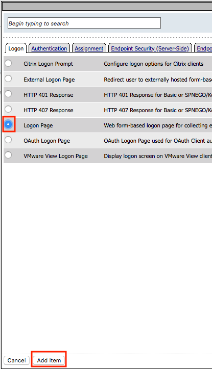
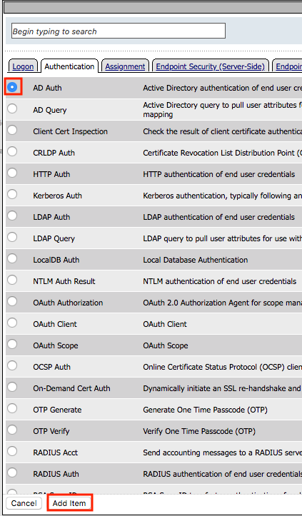
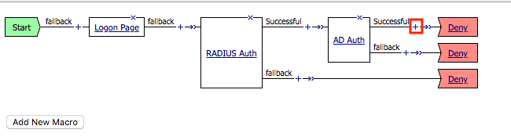
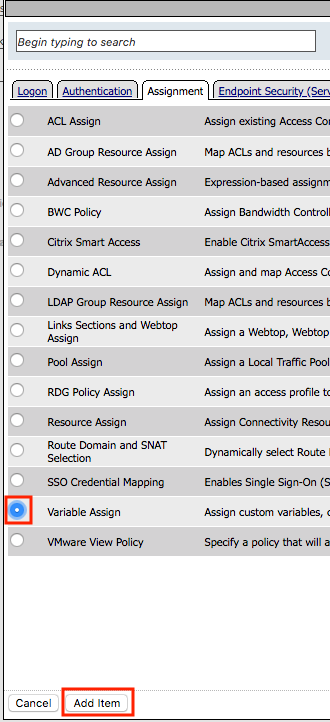
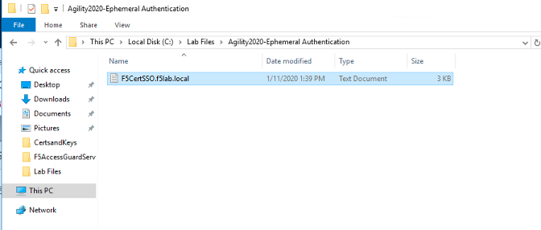
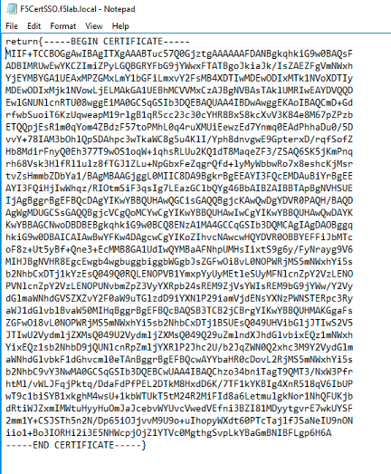
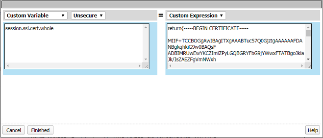
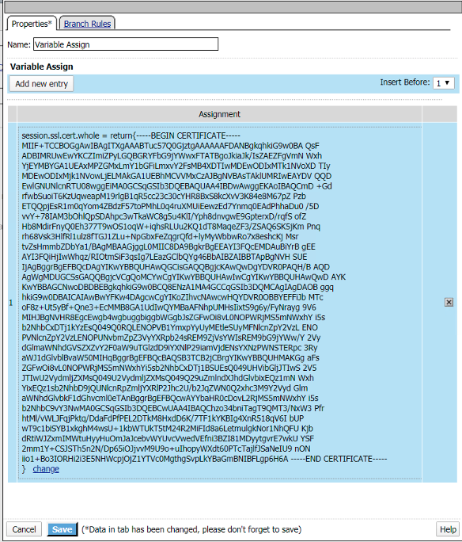

2.1.3. Lab – Create the Access Policy¶
In this section, edit the policy using Visual Policy Editor to enable users to login via AD+MFA, then transition to CertSSO
2.1.3.1. Task – Open Visual Policy Editor¶
- On the CERT_SSO profile line click edit under Per-Session Policy

- Click the + symbol located on the fallback branch located between the Start and Deny boxes

- Select Logon Page under the Logon Tab
- Click Add Item

- Add an additional field to the logon page by selecting password from the Type dropdown on line 3
- Enter OTP for Post Variable Name
- Enter OTP for Session Variable Name
- Enter OTP for Logon Page Input Field #3
- Click Save

- Click the + symbol located on the fallback branch located between the Logon Page and Deny boxes

- Under the Authentication tab select RADIUS Auth
- Click Add Item

- Select RADIUS_SERVERS from the AAA Server dropdown box
- Change the password source to %{session.logon.last.OTP}
- Clic Save

- Click the + symbol located on the Successful branch located between RADIUS Auth and Deny boxes

- under the Authentication Tab select AD Auth
- Click Add Item

- Select f5lab.local from the Server dropdown box
- Click Save

- Click the + symbol located on the Successful branch located between AD Auth and Deny box
- Click Add Item

- Under the Assignment Tab select Variable Assign
- Click Add Item

- Click Add new entry

- Click change

- Enter session.ssl.cert.whole in the custom variable field

- Locate the F5CertSSO.f5lab.local.txt file in the c:LabfilesAgility2020-Ephemeral Authentication directory.

- Open the file with notepad++ and copy the contents of the file

- Return to Visual Policy editor and past the certificate into the custom expression field
- Click Finished

Click Save

- Click the Deny ending icon located on the fallback branch of the Variable Assign Agent

- Click Allow
- Click Save

- Click Apply Access Policy located in the top left corner to commit the policy changes